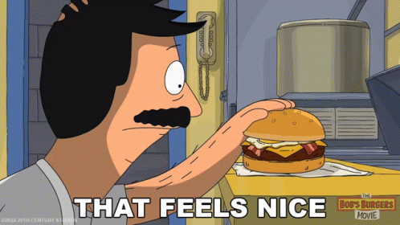
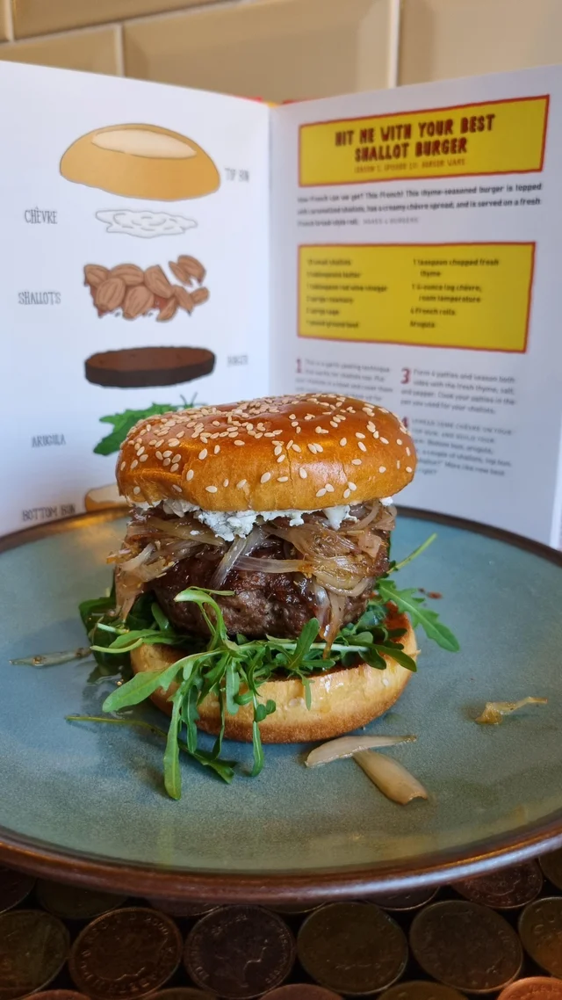

About the Meal
Bob of Bob's Burgers is a renowned burger chef and loves to create pun based burgers, this is
one of those creations.This burger originates from Bob's Burgers Season 1 Episode 10 "Burger Wars".
I don't recall seeing a customer order this but lets pretend it was a hit! This burger
features herb-laced caramelized shallots, chevre, and arugula.
Recipe Reference
Recipe
Ingredients
- 10 Small Shallots
- 3 tsp of Butter
- 1 tsp of Red Wine Vinegar
- 2 Sprigs of Rosemary
- 2 Sprigs of Sage
- 1 lb of Ground Beef
- 1 tsp of Chopped Fresh Thyme
- 1 (4 oz) Log Chevre, Room Temperature
- 4 French Rolls
- Arugula
Steps
-
Put the shallots into a bowl and cover them with boiling water. Let them sit for 10 minutes. Then remove the shallots from the water, cut the root end off,
peel them, and then slice into slivers.
-
Using a frying pan, melt the butter at medium heat. Put the shallots into the pan along with rosemary and sage. Cook and stir everyonce in a while.
When the shallots are a dark brown, stir in the red wine vinegar. Remove the shallots and set them aside, leaving any liquid in the pan.
-
Form 4 patties and season both sides with the fresh thyme, salt, and pepper. Cook the patties in the pan you used to cook the shallots.
-
Spread some chevre on the top buns and then build the burger using the bottom buns. Place the arugula, patties, shallots on the bottom buns and then top them.
Finished Result

Click to Return to the Homepage.